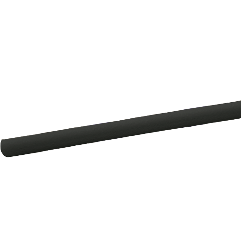
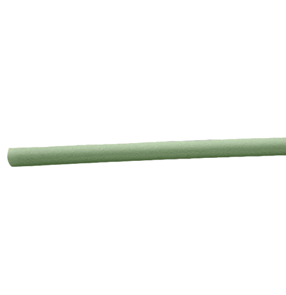
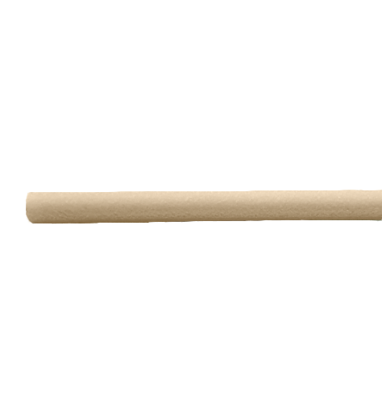
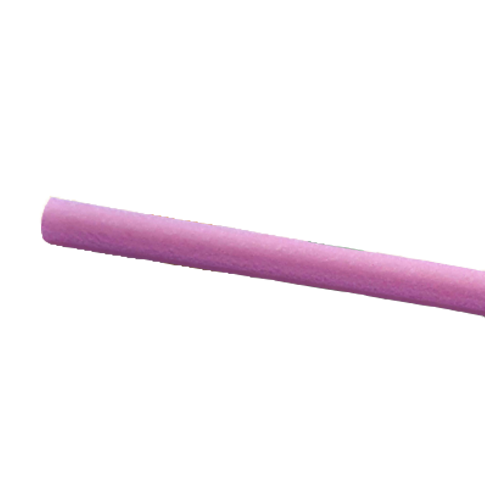
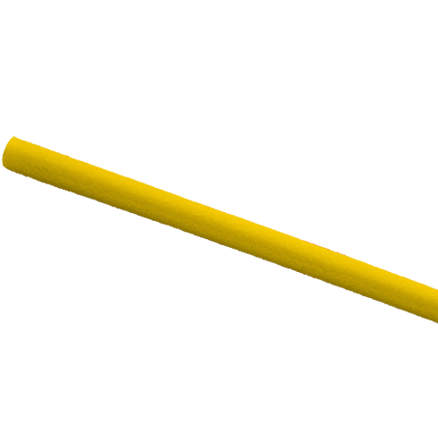
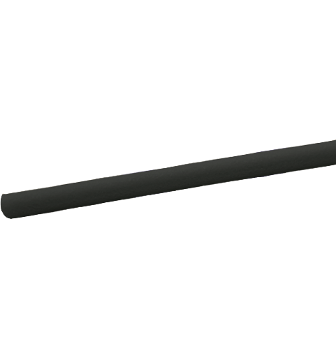
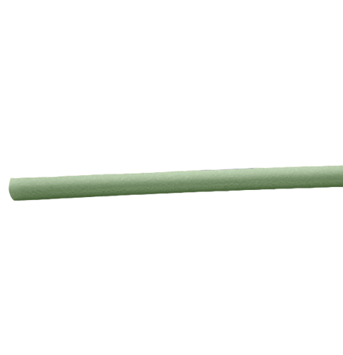
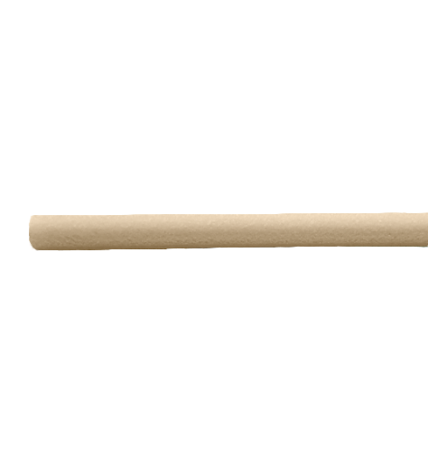
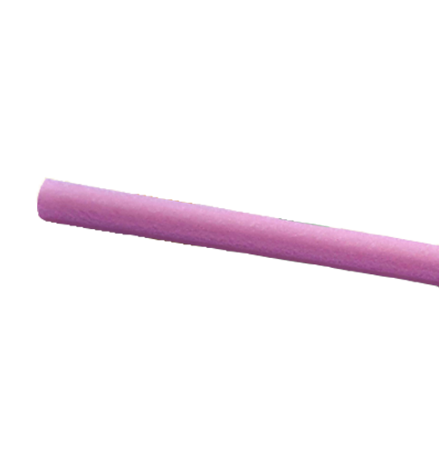
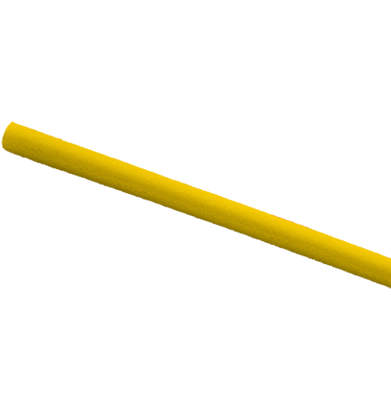

Our first produce, RiceStraws TM is made of broken rice. Aslo know as rice hull, hundreds of millions of tonnes of this agricultural waste is produced annually. We are aslo experimenting with seaweed and tapioca starch to make disposable coffee pods, cutlery, box trays and many others.
We are constanly immersed in discovering new waste materials and creating new disposable consumer products. We have prototyped technology to mass produce biodegradable materials locally or on-site. This puts our clients' brands at the forefront of a sustainable future.
We are fascinated by this process and are constantly studying how we can speed up or slow down the breakdown of different materials. Below is a comparative study between paper straws, PLA straws, Bio PE/PLA straws and RiceStraws TM without additives. Decomposition is complete eight weeks after use.
 








